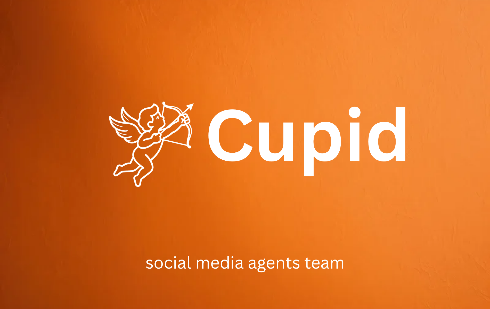
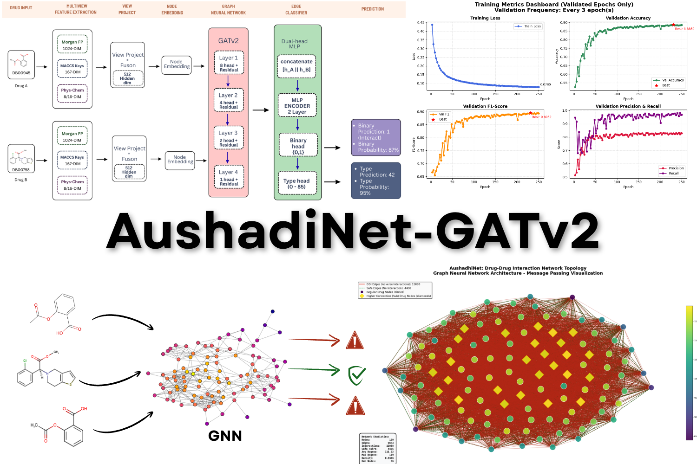

ADYA PRASAD
I work on machine learning research, with a long-term goal of contributing to LLM inference research, LLM alignment, and machine learning systems design. My current experience include model evaluation, post-training, reinforcement learning, and multi-agent systems. At BaseThesis Lab, I study chain-of-thought unfaithfulness using residual-stream activations and linear probes, exploring how models reason internally and whether their verbal explanations faithfully represent that process.
I also bring 4 years of experience building Python backend systems. This engineering background helps me turn research questions into reproducible experiments, build reliable training and evaluation pipelines, and take technical work from an initial hypothesis to analyzed results. I am currently seeking a research internship or job at a startup where I can contribute across ML research, research engineering, and system design.
♡ A soul, committed to the intersection of backend dev, ML research, and startup culture ♡
EXPERIENCES
Applied AI Research Intern | BaseThesis Lab
- Working on research: Evaluating Chain-of-Thought Unfaithfulness from Residual Stream Trajectories and linear probe
- Initiated and co-led an empirical research project investigating whether a model's internal residual-stream representations faithfully align with its verbalized chain-of-thought during reasoning task.
- Designed and curated a diverse evaluation dataset spanning mathematics, reasoning, history, and safety to improve statistical robustness and probe generalization. Scored AUROC 0.65, demonstrating residual-stream trajectories provide useful signals for detecting unfaithful reasoning on-going
Full Stack Developer | NowTreat Healthcare
- Ownership of official website and integrate a patient post treatment care and booking service, along with feedback loop using WordPress CMS, and JavaScript to support post-treatment guidance, and improve patient engagement.
- Small team, high ownership! Along with marketing team and founder, designed an marketing funnel for better user experience and engagement and converting online traffic to potential patents. Collectively achieve 38% more engagement and 26% more footfall
Founder: Creators AI Lab
- Cupid AI Suite: An app with Swarm of AI agents for diverse and user
personalized research and content creations using LangGraph, FastAPI, API Services,
PostgreSQL, Redis, ChromaDB, and Docker.
Designed a multi-stage safety and response evaluation pipeline combining heuristic validation, policy checks, and quantitative monitoring metrices to filter user inputs and validate LLM outputs before responding to user. - Luffy Create:Luffy Create is a free and open source AI video editing, video
creation, image editing and graphic designing web app.
Luffy Create has been built with the principle of providing a lightweight and fast editing experience. Goal: Our aim is to make 'Luffy Create' the best editing app for animations, transitions, and effects.
Freelance Works (Developer)
- Yatidhara [FMCG]:Work with founder in supply chain of Ayurvedic and healthy (gift style) products. I work on designing premium healthy products (snacks) packaging and end to end ecommerce web development.
- Focus Point [Digital Library and Study Space]: Along with founder Mukesh Sonkar (a frontend engineer)and I (as a full stack developer) build platform (library marketplace). The Focuspoint serve as marketplace for both library owner and students. Library owner can list their library and students can find the best library as per their need in nearby
OPEN SOURCE CONTRIBUTIONS
updated src/peft/utils/other.py in the set_additional_trainable_modules() and _get_module_names_tied_with_embedding() functions to respect the model config and also create test file
Conduct experiement with finetuning, benchmarking the LLaMA-Adapter (adaptation_prompt) for Conversation AI and Math reasoning. I configured custom adapter config and training parameter with the Llama-3.2-3B model, ran multiple training pipelines on the MetaMathQA dataset, and evaluated its memory efficiency, accuracy, loss and reasoning retention against baseline methods to provide benchmarked result to community.
ARTICLES
1. AushadiNet-GATv2: Graph Attention Network for Predicting Drug-Drug Interactions in Polypharmacy
-PRODUCTION PROJECTS
Cupid: Agentic Social Media Content Generation Platform

Luffy Create: AI Video Creation App
Built on Electron, ffmpeg and ai api.
AushadhiNet-GATv2 DDI Model

RESEARCH PROJECTS
Cupid: Agentic Social Media Content Generation Platform
Luffy Create: AI Video Creation App
Built on Electron, ffmpeg and ai api.
AushadhiNet-GATv2 DDI Model
SKILLS AND TECH STACK
EXTRACURRICULAR ACTIVITIES & ACHIEVEMENTS
-
Deloitte Australia Technology Job Simulation on Forage
- Develop a program to normalise different telemetry JSON data of IOT machine (Simple ETL pipelines)
- Craft a complete "software development proposal" for a real-time monitoring live dashboard
-
Founder (Developer and Author) of a STEM educational website: indiecore.in
- Run and manage a STEM educational website, specially focused on high school and intermediate students to provide free of cost study material for their exam preparation, computer skills, and reasoning skills development
- Create 500+ resources and materials: blogs, webstories, quizzes, mock tests, pdfs and flashcards. Achieved 1 million plus impressions and than 200k traffic
- Teaching assistance for freshers, in fundamentals of computer application subject. Office hours work on managing course materials and leading discussion group.
- Hackathon Winner: Bye to Beat on Devpost | Project: AushadhiNet-GATv2 DDI Model | Predicting Drug-Drug Interactions
- 200+ Submission Competitive Programming: HackerRank, LeetCode, CodeForces, and TensorTonic
LEARNINGS (EDUCATION)
St Thomas International School:
High School (9 and 10)Intermediate (11 and 12).
VBSP University:
B.Tech(Computer Science & Engineering)Harvard CS50x:
Computer Science, Cybersecurity, Artifical Intelligence and R*.Master Diploma in Computer Application
from Amrtikosh Info-tech institute (duration: 2 years). Fundamentals of Computer programming, C, JavaScript, TypeScript, Bash Scripting, Web Development, Office Automation.Certifications:
- YouTube full course playlist I take: Standford C229 Machine Learning (Autumn 2018), Stanford CS230 Deep Learning (Autumn 2025), Standford CS224R Deep Reinforcement Learning (Spring 2025)
- Amazon SageMaker AI Getting Started by AWS Training - [Oct 2025]
- Build Your Own Chatbotby IBM SkillsBuild- [Jan 2025]
- Market research by Great Learning - [May 2024]
- Google Technical Writing Course One and Two by Google Developers - [June 2022]
- Content Creation, Optimization, SEO and Strategies by HubSpot Academy